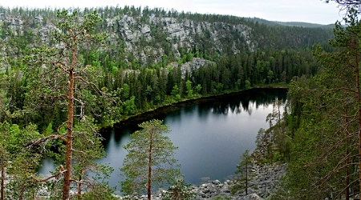

ЗАБАЙКАЛЬСКИЙ ЗАПОВЕДНИК
Автор: Alphatetia - собственная работа, CC BY-SA 4.0, https://commons.wikimedia.org/w/index.php?curid=59324770
УССУРИЙСКИЙ ЗАПОВЕДНИК
Автор: Хабаровчанин - собственная работа, CC BY-SA 3.0, https://commons.wikimedia.org/w/index.php?curid=17957695
ПЕЧОРО-ИЛЫЧСКИЙ ЗАПОВЕДНИК
ЦЕНТРАЛЬНОСИБИРСКИЙ ЗАПОВЕДНИК
ЗАПОВЕДНИК КИВАЧ

ПИНЕЖСКИЙ ЗАПОВЕДНИК

ДАРВИНСКИЙ ЗАПОВЕДНИК